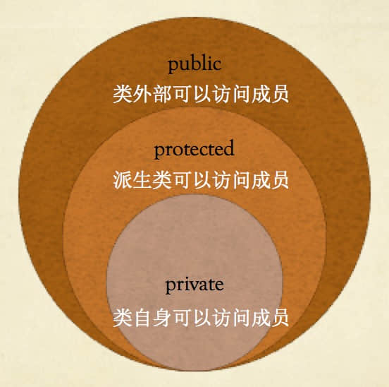

面向对象程序设计的三大特征：继承、封装、多态。
基类和派生类
继承是指根据一个类，定义一个新的类。创建一个类时，您不需要重新编写新的数据成员和成员函数，只需指定新建的类继承了一个已有的类的成员即可。这使得创建和维护一个应用程序变得更容易。这样做，也达到了重用代码功能和提高执行时间的效果。已有的类叫基类（父类），新建的类称为派生类（子类）。
1 | //定义动物类 |
分析代码，定义一个子类的格式
class 派生类名:访问修饰符 基类名。
访问控制和继承
访问修饰符：private、protected、public。
派生类可以访问基类中所有的非私有成员（public和protected）。因此基类成员如果不想被派生类的成员函数访问，则应在基类中声明为 private。
一个派生类继承了所有的基类（非私有）方法，但下列情况除外：
- 基类的构造函数、析构函数和拷贝构造函数。
- 基类的重载运算符。
- 基类的友元函数。
继承类型
当一个类派生自基类，该基类可以被继承为 public、protected 或 private 几种类型。
我们几乎不使用 protected 或 private 继承，通常使用 public 继承。当使用不同类型的继承时，遵循以下几个规则：
- 公有继承（public）：当一个类派生自公有基类时，基类的公有成员也是派生类的公有成员，基类的保护成员也是派生类的保护成员，基类的私有成员不能直接被派生类访问，但是可以通过调用基类的公有和保护成员来访问。
- 保护继承（protected）： 当一个类派生自保护基类时，基类的公有和保护成员将成为派生类的保护成员。
- 私有继承（private）：当一个类生自私有基类时，基类的公有和保护成员将成为派生类的私有成员。
多继承
多继承是指一个类继承多个基类的情况。
1 | //哺乳动物继承动物类 |
构造函数原则
如果没有显式的构造函数，编译器会给一个默认的构造函数，并且该默认的构造函数仅仅在没有显式地声明构造函数情况下创建。
如果子类没有定义构造方法，则调用父类的无参数的构造方法。
如果子类定义了构造方法，不论是无参数还是带参数，在创建子类的对象的时候,首先执行父类无参数的构造方法，然后执行自己的构造方法。
在创建子类对象时候，如果子类的构造函数没有显示调用父类的构造函数，则会调用父类的默认无参构造函数。
在创建子类对象时候，如果子类的构造函数没有显示调用父类的构造函数且父类自己提供了无参构造函数，则会调用父类自己的无参构造函数。
在创建子类对象时候，如果子类的构造函数没有显示调用父类的构造函数且父类只定义了自己的有参构造函数，则会出错（如果父类只有有参数的构造方法，则子类必须显示调用此带参构造方法）。
如果子类调用父类带参数的构造方法，需要用初始化父类成员对象的方式。